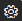

Überblick der Aufgaben zum Einrichten von Business Central
Business Central enthält Standardkonfigurationen für die meisten Geschäftsprozesse, aber Sie können die Konfiguration ändern, um sie an die Bedürfnisse Ihrer Organisation anzupassen. Die Business Central Schnellstart Artikel können Ihnen helfen, die ersten Schritte zu unternehmen, um Business Central zu Ihrem eigenen zu machen. Dieser Artikel bietet einen Überblick darüber, wie Sie Business Central für Ihr Unternehmen konfigurieren können.
Beispielsweise ist Ihr Kontenplan mit Kontensummen vorausgefüllt, die zur Verwendung bereit sind. Sie können den Kontenplan selbstverständlich ändern und Ihren persönlichen Anforderungen anzupassen. Erfahren Sie mehr unter Finanzen.
Über das Symbol  Menü können Sie auf Anleitungen zur unterstützten Einrichtung zugreifen, die Ihnen bei der Konfiguration bestimmter Szenarien und beim Hinzufügen von Funktionen helfen Business Central. Weitere Informationen darüber, wie Sie auf alle unterstützte und manuelle Einrichtungsseiten zugreifen, finden Sie unter Vorbereiten auf die Geschäftstätigkeiten.
Hinweis
Die Checkliste Erste Schritte kann Ihnen helfen, die wichtigsten Informationen festzulegen.
Zusätzlich zur unterstützten Einrichtung können einige allgemeine als auch solche für bestimmte Geschäftsvorgänge auch manuell eingerichtet werden. Nachfolgend finden Sie eine Tabelle von Funktionalität, die Sie manuell einrichten können.
| Bis | Siehe |
|---|---|
| Einrichten des Zahlungsformen, Währungen und Kontenplänen und definieren von Regeln für die Verwaltung von Finanztransaktionen. | Finanzen einrichten |
| Richten Sie Ihre eigenen Konten und die Kreditorenbankkonten ein und Aktivieren Sie Services für das Importieren und Exportieren von Bankdateien. | Einrichten von Banken |
| Konfigurieren der Regeln und Werte, die die Vertriebsrichtlinien des Mandanten, neue Kunden des Journals und Einrichtung festlegen, um mit Kunden zu kommunizieren. | Einrichten von Verkäufen |
| Konfigurieren der Regeln und Werte, durch die die Einkaufsrichtlinien des Unternehmens definiert werden, erfassen von neuen Kreditoren und Priorisieren von Kreditoren für Zahlungsverarbeitungen. | Einkaufeinrichten |
| Konfigurieren der Regeln und Werte, die die Unternehmensrichtlinien für Lager definieren, Standorte einrichten, wenn Sie Ihren Lagerbestand in mehreren Lager führen und Ihre Artikel kategorisieren, um die Suche und das Sortieren zu verbessern. | Bestand einrichten |
| Geben Sie Standardberichte an, die für verschiedene Dokumenttypen verwendet werden sollen. | Berichtsauswahl für Belege |
| Ressourcen, Arbeitszeittabellen und Projekte einrichten, um Projekte zu verwalten. | Einrichten des Projektmanagements |
| Konfiguriert, wie Anlagen versichert, verwaltet und abgeschrieben werden und wie Sie die Kosten aus Anlagen in Ihren Mandantenbüchern erfassen. | Anlagen einrichten |
| Definieren Sie die allgemeinen Regeln und Werte für Lagerprozesse und die spezifische Bearbeitung an jedem Lagerort. | Einrichten von Warehouse Management |
| Bereiten Sie Fertigungsstücklisten und Arbeitspläne vor, um zu definieren, wie Endartikel produkziert werden und bereiten Sie Arbeitsplätze oder Arbeitsplatzgruppen vor, um die notwendigen Arbeitsgänge auszuführen. | Produktion einrichten |
| Richten Sie Standardservices, Symptome und Fehlercodes ein, und legen Sie die Serviceartikel, Ressourcen und Dokumentation fest, die benötigt wird, um Ihre Debitoren Service bereitzustellen. | Einrichten der Serviceverwaltung |
| Lesen Sie die besten Verfahren für Artikel für Lagerkostenberechnung und -Beschaffungsplanung. | Einrichten komplexer Anwendungsbereiche mithilfe bewährter Methoden |
| Verbessern Sie die Qualität der Implementierung und verkürzen Sie die Bereitstellungszeit, indem Sie ein Toolset zur Einrichtung eines neuen Mandanten mit Assistenten, Vorlagen, Arbeitsblättern und Fragebögen verwenden. | Mandanten mit RapidStart Services einrichten |
| Übertragen Sie Debitoren, Kreditoren, Lagerbestände und Bankkontoinformationen aus einer anderen Anwendung zu Business Central | Geschäftsdaten aus anderen Finanzsystemen importieren. |
| Mit dem Business Central Outlook-Add-In können Sie die Finanzdaten sehen, die mit den Debitoren und Kreditoren verknüpft sind, oder Finanzbelege wie beispielsweise Angebote und Rechnungen erstellen und versenden. | Business Central als Posteingang für Ihr Unternehmen in Outlook verwenden |
| Erhalten Sie Einblicke in Ihre Business Central-Daten mit Power BI und Business Central-Inhaltspaketen. | Aktivieren Sie Ihre Geschäftsdaten für Power BI |
| Verwenden Sie Ihre Business Central-Daten als Teil eines Workflows in Power Automate. | Business Central in einem automatisierten Workflow verwenden |
| Sie können die Business Central-Daten als Datenquelle in Power Apps bereitstellen. | Verknüpfung mit Business Central daten, um eine Geschäfts-App mithilfe von Power Apps zu erstellen |
| Verwenden Sie dedizierte QuickBooks-Migrationshandbücher. | Von QuickBooks-App zu Business Central wechseln |
| Greifen Sie von Ihrem mobilen Gerät auf Business Central-Daten zu. | Abrufen von Business Central auf meinem mobilen Gerät |
| Verwenden Sie Massenrechnungsstellung zu Terminen, die in Microsoft Bookings erstellt wurden. | Massenrechnungsstellung für Microsoft Bookings |
| Richten Sie einen SMTP-Server so ein, dass die E-Mail-Kommunikation mit Business Central aktiviert ist. | Richten Sie E-Mail Nachricht manuell oder mit der unterstützten Einrichtung ein |
| Richtet eindeutige Identifizierungscodes für Datensätze, wie Karten, Belege und Buch.-Blattzeilen ein, um sie im System zu verfolgen. | Erstellen von Nummernkreisen |
| Sie können Ihrer Firma sowie Ihren Geschäftspartnern, wie z. B. Debitoren, Kreditoren und Lagerorten, Basiskalender zuordnen. Die Liefer- und Wareneingangsdaten auf zukünftigen Verkaufsaufträgen, Einkaufsbestellungen, Umlagerungsaufträgen und in Fertigungsauftragszeilen werden, entsprechend den Arbeitstagen, die im Kalender festgelegt sind, errechnet. | Basiskalender einrichten |
Einige Bereiche erfordern, dass Sie ein Administrator Ihres Abonnement Business Central sind. Erfahren Sie mehr unter Verwaltung.
Hinweis
Als Administrator können Sie in Business Central mit RapidStart Services ein neues Unternehmen einrichten. Dieses Tool wurde entwickelt, um die Bereitstellungszeiten zu verkürzen, die Qualität der Implementierung zu verbessern, einen wiederholbaren Ansatz für Implementierungen einzuführen und die Produktivität durch Automatisierung und Vereinfachung wiederkehrender Aufgaben zu steigern. Erhalten Sie weitere Informationen zum Einrichten Ihres Unternehmens mit RapidStart Services.
Einrichten von Apps
Zusätzlich zu den Kernfunktionen in Business Central fügt Microsoft einige Aps hinzu, die auf der Seite Erweiterungsverwaltung aufgelistet sind. Ab Oktober 2022 bietet jede App einen Link zum Starten ihrer Einrichtungsseite – wählen Sie einfach die Aktion Einrichten aus.
Sie können Business Central beim Hinzufügen von AppSource-Apps auch Funktionen hinzufügen. Erfahren Sie mehr unter Anpassen von Business Central Online mithilfe der Erweiterungen.
Siehe auch
Unternehmensdatenübersicht
Verwaltung
Finanzen
Verkauf
Einkauf
Bestand
Projektmanagement
Anlagen
Montageverwaltung
Produktion
Lagerverwaltung – Übersicht
Arbeiten mit Business Central
Neue Unternehmen anlegen in Business Central
Bereitschaft für die Geschäftsabwicklung
Business Central Schnellstarts
Starten Sie eine kostenlose Testversion!
Kostenlose E-Learning-Module für Business Central finden Sie hier